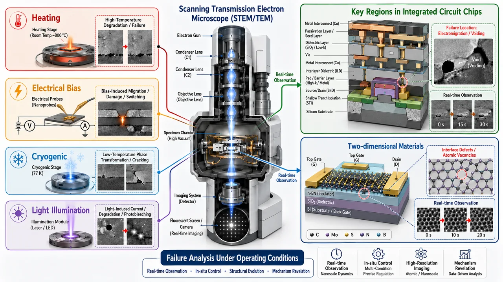
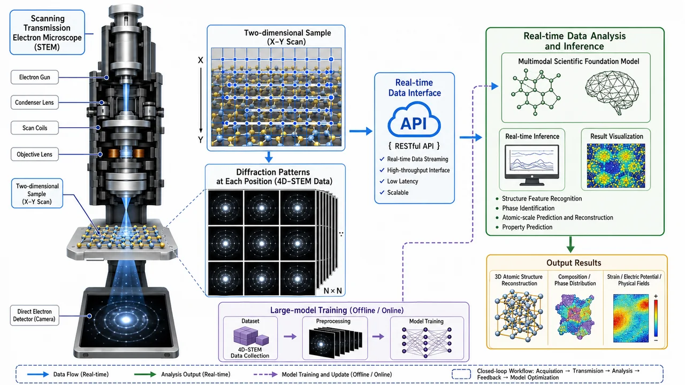
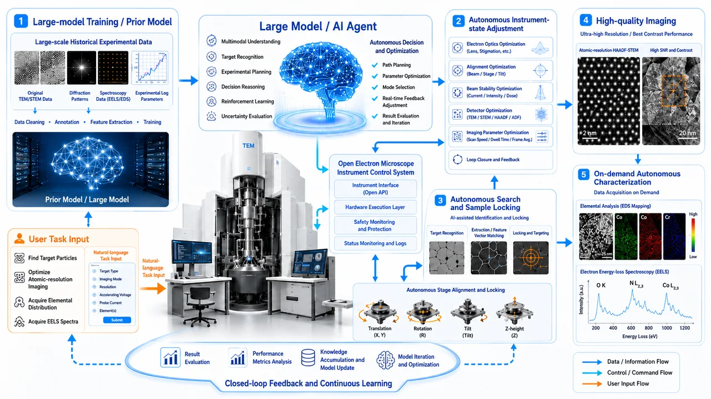
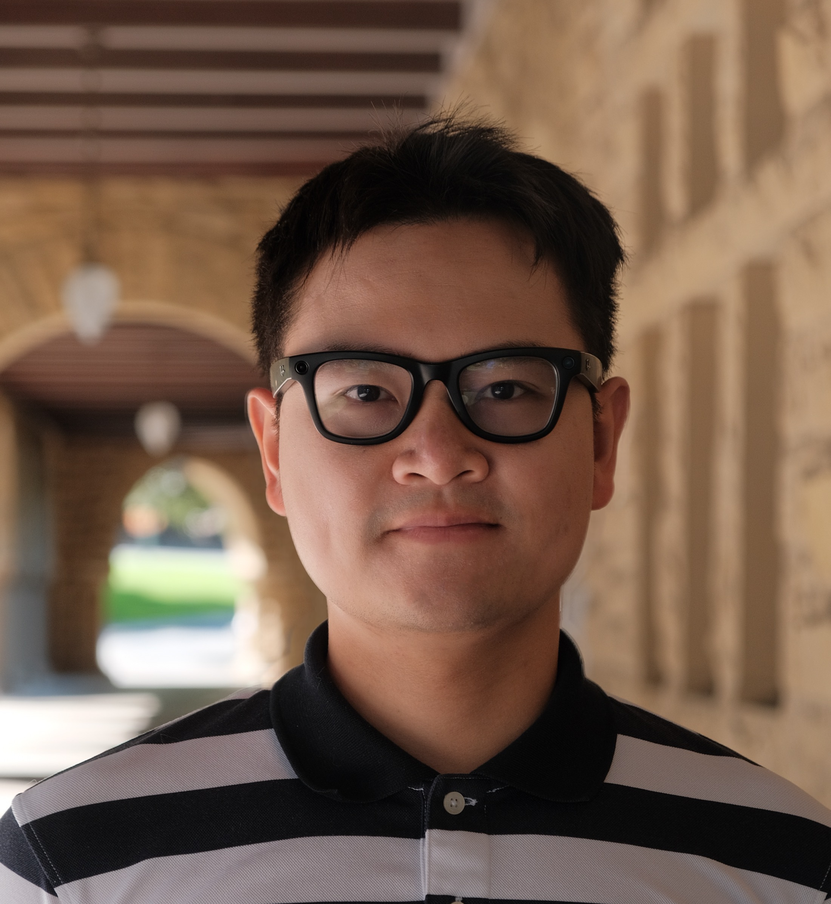

Failure Analysis of Integrated-Circuit Devices and Key Materials under Operando Conditions
Developing atomic-scale imaging, electron diffraction, electron energy-loss spectroscopy, and multimodal microscopy methods to study structural and property evolution under electrical, thermal, mechanical, optical, and other operating conditions. Conducting synthesis, transfer, micro- and nanofabrication, interface engineering, and device-performance studies of two-dimensional materials to explore structure–property relationships in low-dimensional systems.

02
Multimodal Scientific Foundation Models and 3D Atomic-Structure Reconstruction for High-Throughput Electron-Microscopy Data
Building multimodal scientific foundation models for high-throughput electron-microscopy data and conducting three-dimensional atomic-structure reconstruction. Focusing on functional materials and devices including ferroelectrics, piezoelectrics, and ferromagnets to investigate how polarization, magnetism, strain, defects, and interfacial structures influence device performance and reliability.

03
Open Electron-Microscopy Instrumentation and Autonomous Experimentation
Using foundation models, machine learning, and intelligent-control technologies to develop autonomous electron-microscope control, automated sample finding and tilting, imaging-parameter optimization, intelligent data acquisition, and automated analysis, advancing open electron-microscopy instrumentation and autonomous experimentation platforms.

People

Professor Kun Xu
Kun Xu is a Professor at the University of Science and Technology Beijing and a recipient of the National High-Level Young Talent Program (2025). He received his PhD from Tsinghua University in 2022 under Academician Jing Zhu. From 2022 to 2026, he conducted postdoctoral and collaborative research at Stanford University, SLAC National Accelerator Laboratory, and Lawrence Berkeley National Laboratory, under the mentorship of Professor Arun Majumdar, founding dean of the Stanford Doerr School of Sustainability. In June 2026, he joined the Academy for Advanced Interdisciplinary Science and Technology at the University of Science and Technology Beijing, in the group of Academician Yue Zhang. His research has long focused on high-resolution electron microscopy imaging, in situ electron microscopy, 4D-STEM, electron ptychography, and atomic-scale spectroscopy.
Jujube
Jujube is an independent-minded orange tabby and joined Deep-X Lab in 2026. He specializes in real-time tracking and analysis of fast-moving objects. He prefers quiet surroundings; his hobbies remain undisclosed.
Publications
Add your latest publication hereAuthors · Journal · Year · DOI / PDF
Add a representative paper hereAuthors · Journal · Year · DOI / PDF
News
NEWS
Launch announcement
Deep-X Lab's new website is now online.
UPDATE
Add your first research update
Share new papers, awards, talks, and milestones here.
OPENING
Opportunities
Advertise student, postdoctoral, and collaboration opportunities.
Join Us
PHD STUDENTS
PhD Students
Applications are welcome from students with backgrounds in materials science, physics, chemistry, electronic information, microelectronics, mechanical engineering, computer science, artificial intelligence, instrumentation science, or related fields.
Applicants should be strongly interested in research, with good learning ability, experimental skills, and teamwork. Experience in electron microscopy, materials synthesis, micro- and nanofabrication, device testing, data analysis, machine learning, or programming is preferred but not required.
POSTDOCTORAL RESEARCHERS
Postdoctoral Researchers
PhD graduates with backgrounds in materials science, condensed-matter physics, electron microscopy, microelectronics and integrated circuits, artificial intelligence, instrumentation science, or related areas are welcome to apply.
Preferred experience
Transmission electron microscopy, scanning transmission electron microscopy, 4D-STEM, electron energy-loss spectroscopy, or in situ electron microscopy
Two-dimensional materials, ferroelectric, piezoelectric, or ferromagnetic materials, and advanced integrated-circuit devices
Micro- and nanofabrication, device fabrication, electrical testing, or multiphysics testing
Machine learning, foundation models, multimodal data analysis, automatic control, or intelligent scientific instrumentation
Research software, data-processing algorithms, or instrument-control-system development
The group supports postdoctoral fellows in pursuing independent research, applying for projects, participating in domestic and international academic exchanges, and advancing their career development.
UNDERGRADUATE INTERNS
Undergraduate Interns
Undergraduates interested in interdisciplinary research spanning electron microscopy, two-dimensional materials, functional materials, advanced devices, and artificial intelligence are welcome to join.
Possible internship activities
Electron-microscopy image and spectroscopy-data processing
Two-dimensional-material transfer, sample preparation, and device fabrication
Testing of ferroelectric, piezoelectric, and ferromagnetic materials and devices
Scientific programming with Python, MATLAB, and related tools
Machine-learning and foundation-model applications in electron microscopy
Automatic control of scientific instruments and autonomous-experiment workflow development
Undergraduate interns will participate in active research projects under the guidance of group members. Outstanding interns may further contribute to publications, research competitions, and subsequent graduate training.
Facilities
Advanced Instrumentation for Research
Our platform integrates advanced electron microscopes, focused ion beam microscopes, and advanced semiconductor testing instruments.
JEOL
JEM-ARM300F2 GRAND ARM™2
Equipped with dual aberration correction, this transmission electron microscope offers exceptional spatial resolution and rapid imaging, resolving atomic arrangements at sub-angstrom scales—roughly one-millionth the diameter of a human hair. Combining highly sensitive imaging with spectroscopic analysis, it identifies elemental composition, chemical valence states, and local electronic structure at ultrahigh spatial resolution. Its broadly adjustable accelerating voltage accommodates diverse materials and radiation sensitivity, providing essential support for atomic-scale studies of semiconductors, two-dimensional materials, and functional materials.
A multipurpose field-emission transmission electron microscope for high-resolution TEM/STEM imaging and analysis, combining stability, brightness, and energy resolution.
A multipurpose TEM with digital control and automated functions, supporting imaging and analysis across materials-science and life-science applications.
A dual-beam FIB-SEM platform integrates high-resolution scanning electron microscopy, focused Ga-ion-beam processing, and nanoscale manipulation. It enables precise targeting, cutting, thinning, and cross-section preparation in specific regions of materials and devices. In addition to site-specific preparation of high-quality TEM specimens, it supports localized chip window opening, circuit modification, micro- and nanostructure fabrication, and in situ manipulation. It also enables concurrent analysis of microstructure, internal structure, and defect distributions, providing integrated technical support for integrated-circuit failure analysis and advanced materials research.
A field-emission SEM for high-resolution surface imaging and analysis across material, life-science, and industrial samples, with low-voltage imaging and broad sample flexibility.